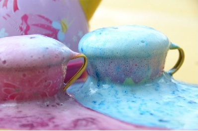
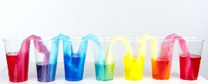
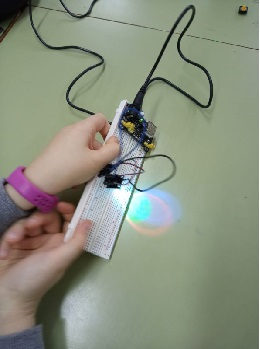
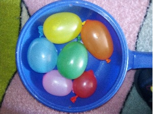
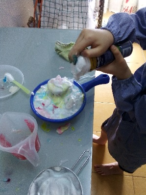

En esta sección os propongo una serie de experimentos muy sencillos
y muy divertidos para hacer con l@s más peques, acompañándol@s y
descubriendo lo divertida que es la ciencia.
¡Ciencia!
Aquí quiero compartir una de mis aficiones, que es la de hacer experimentos
con l@s más peques de la casa. Porque la ciencia es muy divertida, y no hay mejor
forma de aprender y motivar que manipulando, creando, construyendo con nuestras
propias manos...
Volcanes de colores

Experimento con bicarbonato y vinagre
Para este experimento necesitas:
Recipientes (serán los volcanes)
Agua
Bicarbonato
Colorante alimenticio de distintos colores
Vinagre
En los recipientes añade un poco de agua con bicarbonato, y echa colorante de distintos
colores. Cuando añadas un buen chorro de vinagre a la mezcla el volcal entrará en
erupción.
La razón de esta mezcla es porque el vinagre es un ácido, y el bicarbonato es una base, y al
juntarse reaccionan transformándose en agua, acetato de sodio y dióxido de carbono, que es
el responsable de que se formen las burbujas de lava.
Agua que camina

Experimento de capilaridad
Para este experimento necesitas:
7 vasos de igual tamaño
Agua
Colorante alimenticio. rojo, amarillo y azul
Papel absorbente
Llena con agua los vasos primero, tercero, quinto y séptimo. Añade colorante rojo
en el primer y último vaso, colorante amarillo en el tercer vaso
y colorante azul en el quinto vaso. Enrolla el papel absorvente y mete
un extremo en un vaso y el otro extremo en otro vaso, de forma que quede una cadena de
vasos unidos por el papel.
Ahora tendrás que tener paciencia y esperar a que poco a poco, el papel absorba el agua
coloreada y "camine" a los vasos vacíos, y cuando se junten los colores
en ellos se formarán nuevos colores. Además veremos como el agua "camina" de un vaso a otro
dejándolos a todos más o menos con el mismo nivel, gracias a la capilaridad del papel.
Taller de circuitos

Conociendo la electricidad
Para este experimento necesitas:
Placas protoboard con fuente de alimentación
Cables de conexión
Leds RGB
Este es uno de mis experimentos favoritos y las veces que lo he hecho ha tenido mucho
éxito porque se juega con la luz y los colores.
Se trata de crear un circuito muy simple que alimente a un led RGB, de forma que podamos
hacer que brille la luz roja, azul o verde... o todas a la vez!
En este experimento se trabajan los conceptos de polaridad, circuito abierto,
circuito cerrado, y suele resultar muy gratificante poder crear con nuestras manos
una luz de colores tan bonita.
Aquí te dejo un enlace a la web de un cole muy divertido, donde hemos hecho este
taller
Bolas heladas
Bola con colorante

Globos de agua helados
Para este experimento necesitas:
Globos
Agua
Colorante
Pipetas
Llena con agua los globos, puedes hacerlos de distintos tamaños. Luego, bien cerrados,
mételos en el congelador hasta el día siguiente.
Cuando estén congelados, rompe el globo y saca las bolas de hielo. Colócalas sobre un recipiente
y con una pipeta agua caliente. Verás como poco a poco el hielo se derrite y se van
formando huecos y surcos en el hielo. Si en estos huecos que se van formando añades
agua con colorante
¡tendrás un efecto de volcan helado!
También se pueden meter pequeños objetos dentro de los globos antes de meter
al congelador, así cuando saquemos nuestras bolas heladas tendrán dentro pequeñas
sorpresas que irán apareciendo según se vaya derritiendo el hielo.
Jugando con espuma

Espuma con colorante
Para este experimento necesitas:
Un bote de espuma de afeitar
Colorante
Agua
Pipetas
Cacharros de distintos tamaños
Agita el bote de espuma y rellena los distintos cacharros.
Mezcla el agua y el colorante y con una pipeta echa pequeñas cantidades de
agua coloreada sobre la espuma.
Con esta mezca podemos jugar a hacer helados, volcanes o baños de espuma para
dinosaurios.
Este esperimento, además de ser muy divertido, sirve para jugar a mezclar colores y
crear colores nuevos.